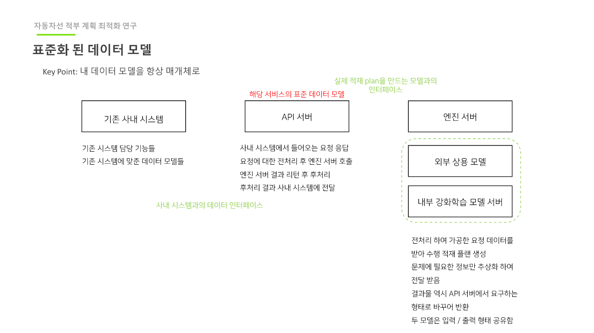
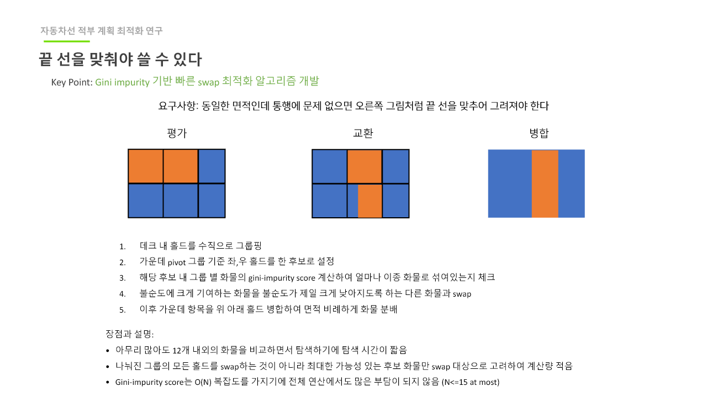
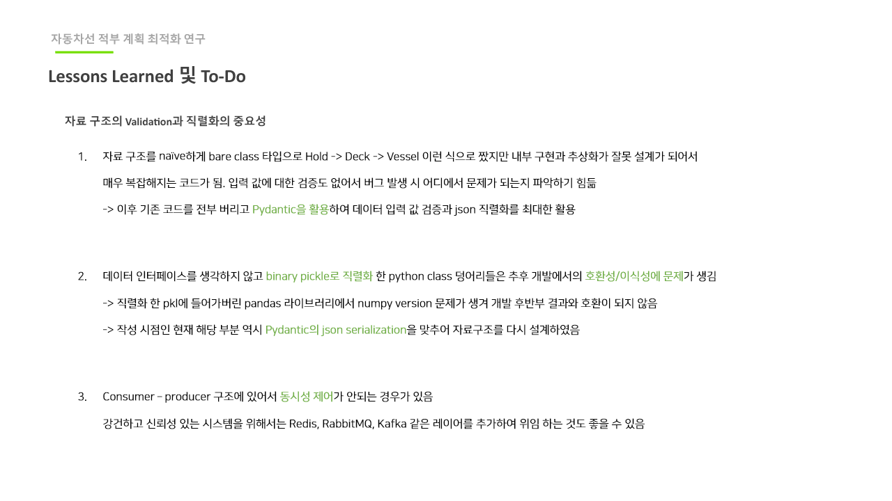
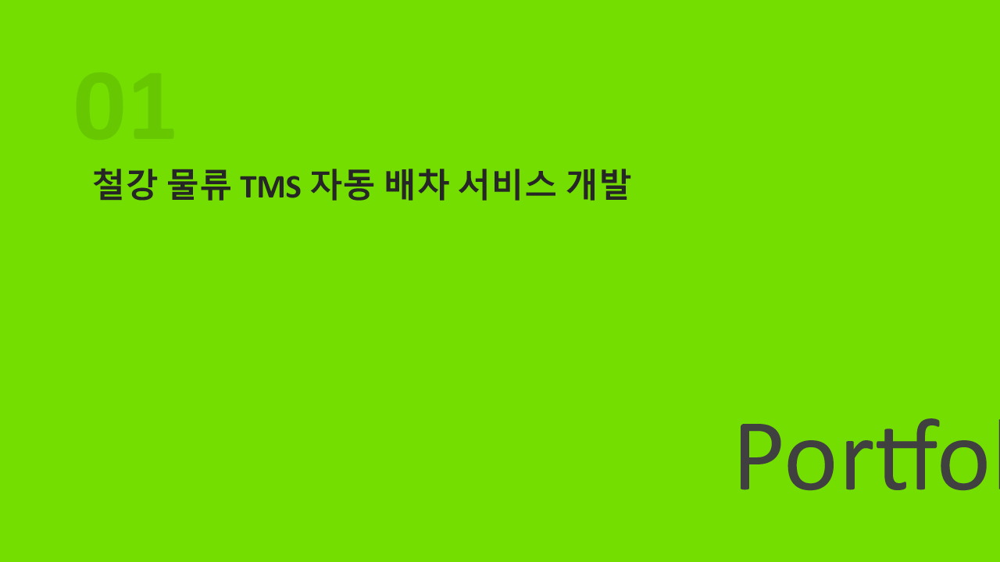
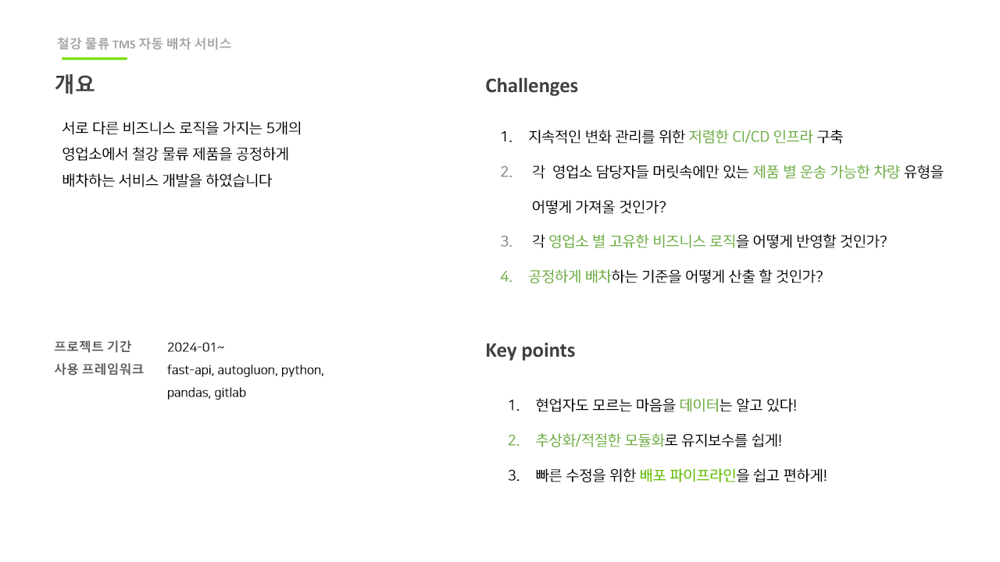
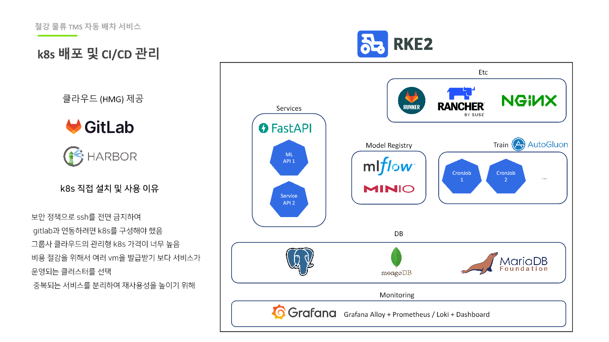
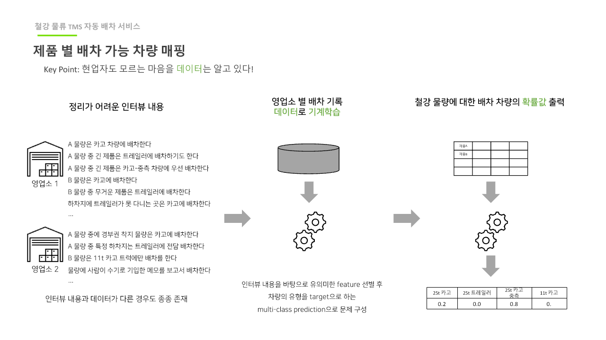
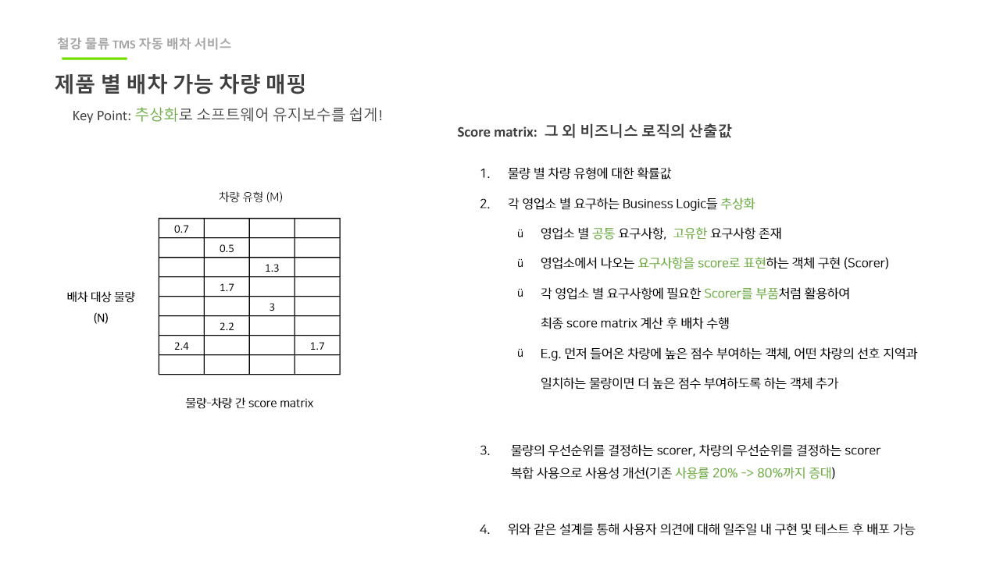

기간
2024.01 ~ 2026.03
Main Case
복잡한 선박 적재 도메인을 계산 가능한 graph/data model로 추상화하고, 5~20분 걸리던 장시간 AI 추론을 기존 시스템과 연결 가능한 운영형 backend로 만들었습니다.
2024.01 ~ 2026.03
도메인 분석, API/Queue/상태 설계, 장애 조치, 배포 운영
Python, FastAPI, RabbitMQ, Redis, Kubernetes, Istio, Helm
추론 지연 5~20분 → 2~3분, scale-out 상태 추적 안정화
API boundary 분리 + callback 라우팅 + 중앙 상태/재처리 정책
적부 최적화는 높이, 공간, 통행 동선, 선적 순서를 모두 고려해야 하는 구조적 문제였습니다. 추론이 길어질수록 동기 호출은 연결 유지 비용이 커졌고, 장애 발생 시 복구 위치를 찾기 어려웠습니다.

이 그림에서 봐야 할 점

이 그림에서 봐야 할 점

이 그림에서 봐야 할 점

이 그림에서 봐야 할 점

이 그림에서 봐야 할 점

이 그림에서 봐야 할 점

이 그림에서 봐야 할 점

이 그림에서 봐야 할 점
이 그림에서 봐야 할 점
| 증상 | 원인 | 조치 | 결과 |
|---|---|---|---|
| 요청이 쌓여도 처리율이 올라가지 않음 | 동기 처리 경로가 부분적으로 남아 있었음 | 요청·완료 흐름을 callback 중심으로 분리 | 평균 응답 연동 안정성이 개선됨 |
| callback 결과를 못 찾는 현상 | pod-local 상태 의존 구조 | Redis 기반 전역 상태 조회로 변경 | 누락 및 재시도 실패 케이스가 감소 |
| 호환성 직렬화 이슈 | pickle 포맷 의존과 라이브러리 버전 차이 | JSON 계약 + encoder 표준화 | 배포간 데이터 파이프라인 호환성 개선 |
장시간 추론 파이프라인을 운영 가능한 비동기 API로 전환해 체감 지연을 5~20분 구간에서 2~3분대로 개선했습니다.
scale-out 시에도 요청 상태와 callback이 정합적으로 연결되어 이탈 요청이 줄었습니다.
표준 데이터 모델을 기준으로 모델/엔진 교체 시 영향 범위를 최소화했습니다.
계산 성능보다 먼저 상태 추적과 실패 복구를 정의해야 운영에서 살아남습니다.
계약 검증 위치를 고정하면 장애를 발견하는 데 드는 시간이 현저히 줄어듭니다.
단일 pod 기준 설계는 scale-out에서 깨지므로 처음부터 분산 상태 모델로 시작해야 합니다.